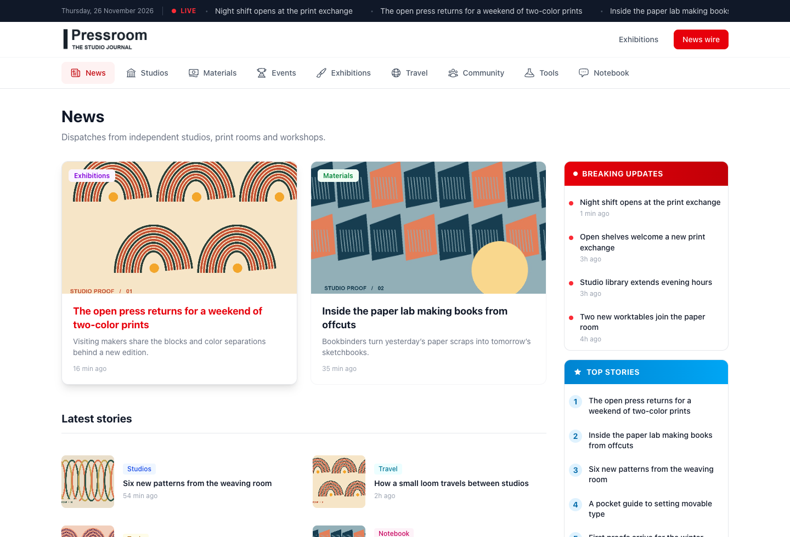
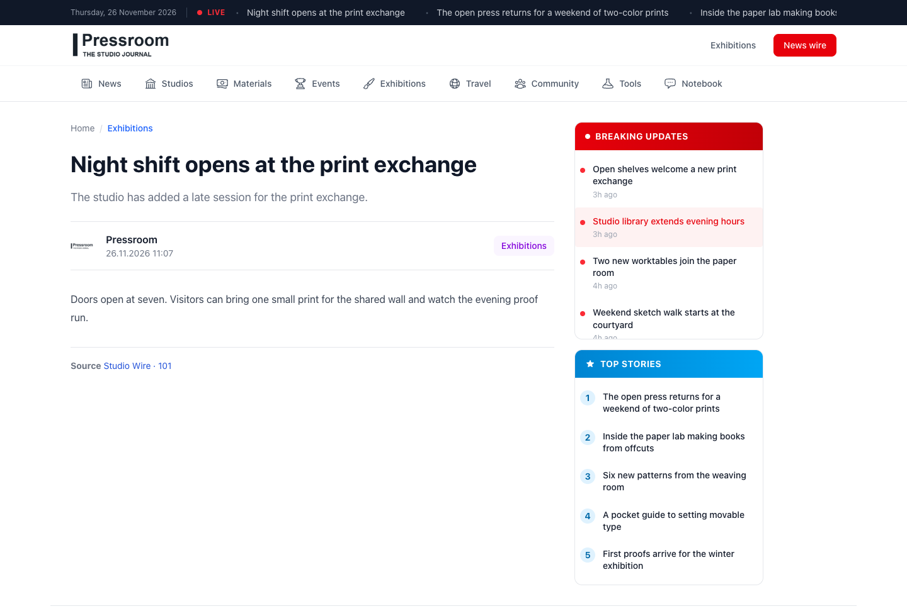

Telegram Newsroom
Publish a Telegram dispatch as a news bulletin that links readers back to the source message.
Open a bulletin and follow its source link to the Telegram dispatch it came from.




Publish a Telegram dispatch as a news bulletin that links readers back to the source message.
Open a bulletin and follow its source link to the Telegram dispatch it came from.

